Geometrie in der Ebene
| Website: | Schulische Weiterbildung & Lernwelt @ VHS Essen |
| Kurs: | 1./2. Fachsemester Turbo 1 Frau Rollhäuser |
| Buch: | Geometrie in der Ebene |
| Gedruckt von: | Robin Fehlhaber |
| Datum: | Samstag, 19. September 2026, 20:12 |
1. Einführung
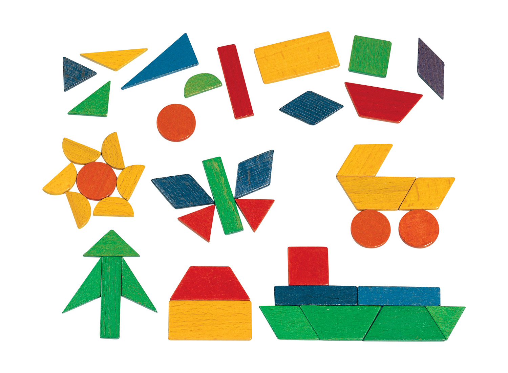
Die Geometrie in der Ebene
beschäftigt sich mit vielen unterschiedlichen Figuren. Dazu gehören zum
Beispiel Dreiecke, Vierecke und Kreise. Jeder dieser Figuren hat ganz
spezielle Eigenschaften, die Sie im Unterricht kennenlernen werden. Um die Figuren ganz genau beschreiben zu können, werden Sie verschiedene Größen kennenlernen. Dazu gehören z. B. Umfang und Flächeninhalt der Figuren.
2. Grundlagen
In diesem Kapitel werden alle wichtigen Grundlagen zusammengefasst.
2.1. Strecke und Gerade

Eine Strecke besitzt einen Anfangs- und einen Endpunkt. Man kann ihre Länge messen.
EIne Gerade hat weder einen Anfangs- noch einen Endpunkt. Man kann sie unendlich verlängern.
2.2. Lagen von Geraden


Übung: Bei welchen der Abbildungen sind die Geraden senkrecht zueinander?


Übung: Bei welchen der Abbildungen sind die Geraden parallel zueinander?

2.3. Entfernung und Abstand
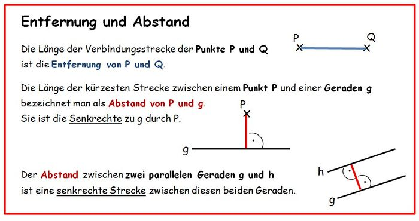
2.4. Umfang und Flächen
Der Umfang einer Figur ist die Länge ihres Randes. Es gibt für die verschiedenen geometrischen Formen unterschiedliche Formeln zur Berechnung des Umfangs.
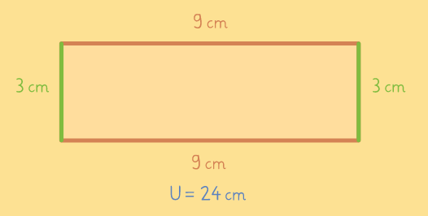
Der Flächeninhalt ist die Fläche, die durch den Rand einer geometrischen Form eingeschlossen wird. Er gibt die Größe der Fläche an. Es gibt für die verschiedenen geometrischen Formen unterschiedliche Formeln zur Berechnung des Flächeninhalts.
2.5. Längenmaße

Merke: Wird die Einheit kleiner, wird die Zahl größer.
Wird die Einheit größer, wird die Zahl kleiner.
Übung:


2.6. Flächenmaße

Merke: Wird die Einheit kleiner, wird die Zahl größer.
Wird die Einheit größer, wird die Zahl kleiner.
Übung:


3. Vierecke
3.1. Quadrat und Rechteck
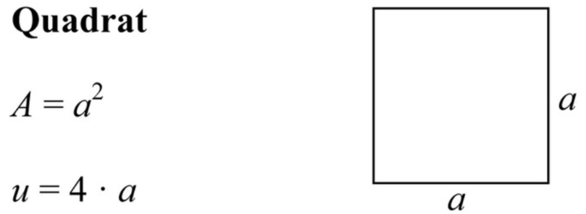
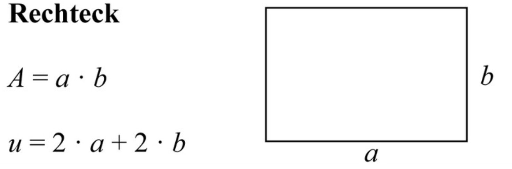

3.2. Übungen: Quadrat und Rechteck
Aufgabe 1)

Aufgabe 2)

Aufgabe 3)

Aufgabe 4)

Aufgabe 5)

Aufgabe 6)

* Aufgabe 7)

* Aufgabe 8)

3.3. Parallelogramm
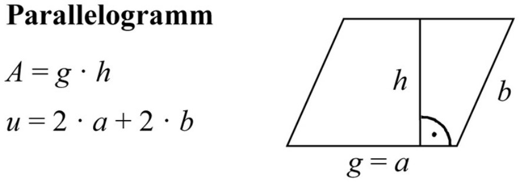
3.4. Übungen: Parallelogramm
Aufgabe 1)

Aufgabe 2)

* Aufgabe 3)

3.5. Trapez
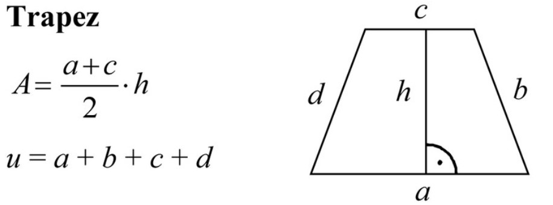
3.6. Übungen: Trapez
Aufgabe 1)

Aufgabe 2)

* Aufgabe 3)

4. Dreieck
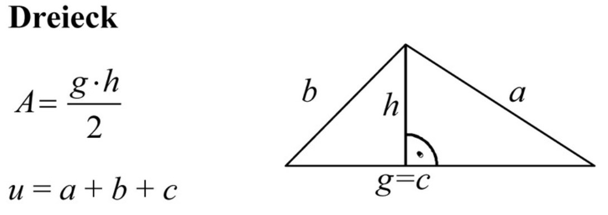
4.1. Übungen: Dreieck
Aufgabe 1)

Aufgabe 2)

Aufgabe 3)

Aufgabe 4)

5. Kreis
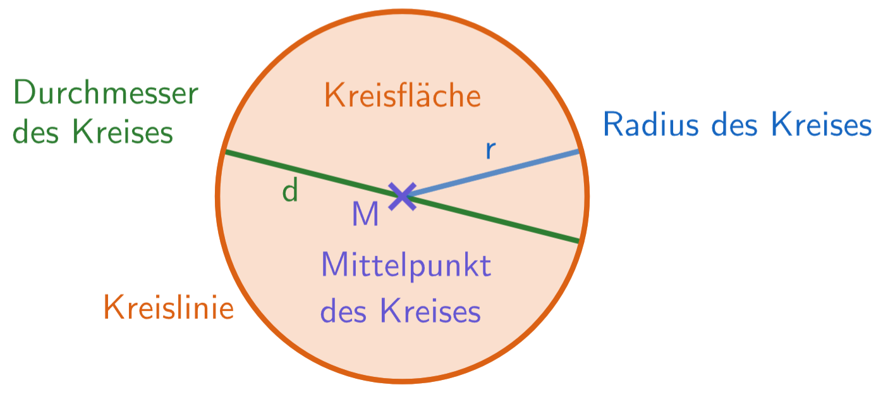
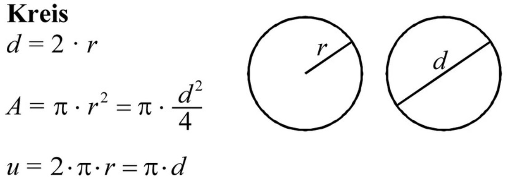
5.1. Übungen: Kreis
Aufgabe 1)

Aufgabe 2)

Aufgabe 3)

Aufgabe 4)

* Aufgabe 5)

* Aufgabe 6)

6. Gemischte Aufgaben
7. zusammengesetzte Figuren
Manchmal muss man den Flächeninhalt von Figuren berechnen, die aus mehreren Figuren zusammengebaut oder bei denen Figuren ausgeschnitten wurden. Dann muss man die Figur zuerst in berechenbare Figuren aufteilen und die einzelnen bekannte Figuren berechnen. Anschließend addiert oder subtrahiert man die einzelnen Figuren.
Beispiel
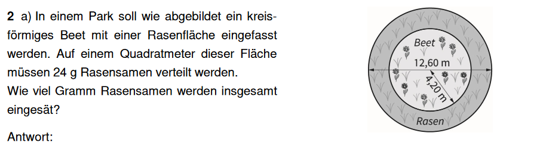

Antwort: Es werden insgesamt 1670,16 g (1,67 kg) Rasensamen eingesät.
Drei weitere Beispiele finden Sie in diesem Erklärvideo: